Hope · Empowerment · Joy
Because the need never stops.
It started with a simple intention: Let’s give back.
Today, humanKIND toronto is a growing circle of women committed to walking alongside women, children, and youth living in shelters across the Greater Toronto Area.
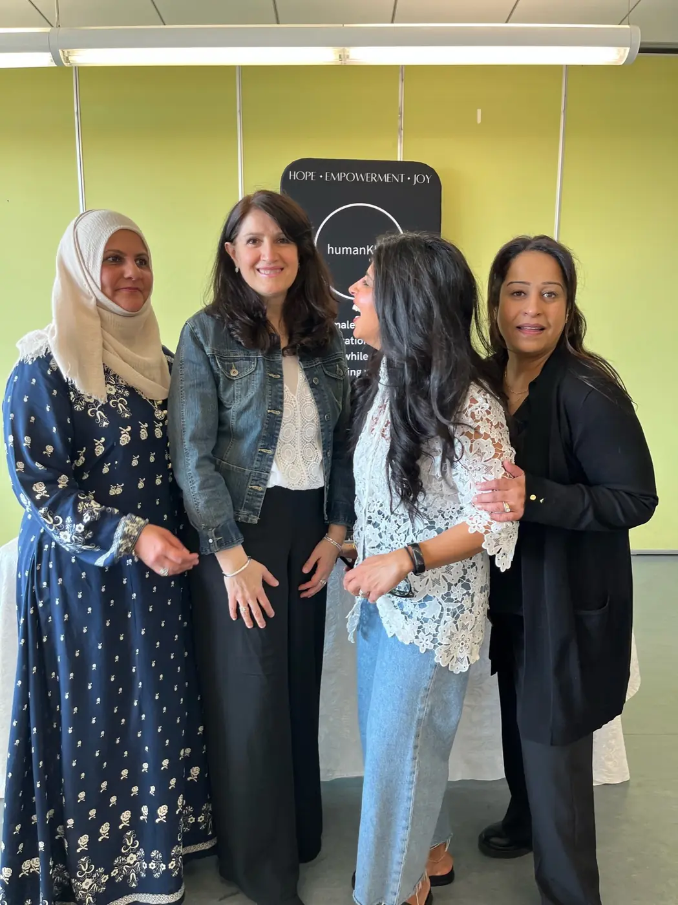

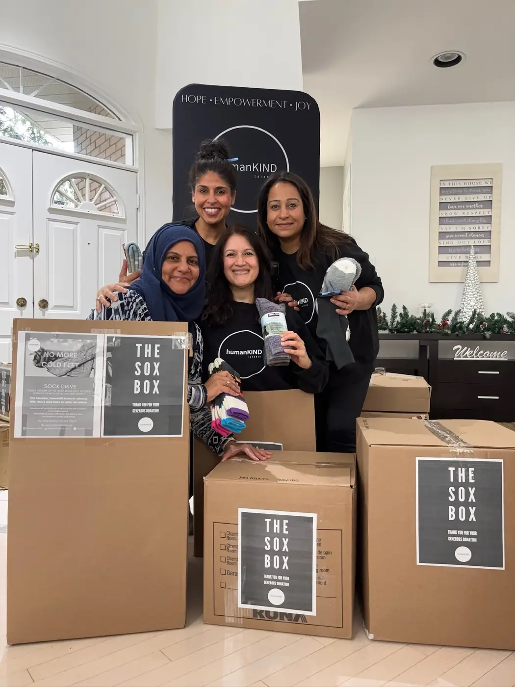
Who we support
those fleeing domestic abuse.
those facing homelessness.
those rebuilding after trauma and isolation.
And we do it with compassion, creativity, and community.
What we do
Every month, we step into shelters.
We offer programs that create space for healing, self-care, creativity, confidence and connection.
We provide essential items throughout the year so that no woman or child feels forgotten in their time of need.
 01Healing
01Healing 02Self-care
02Self-care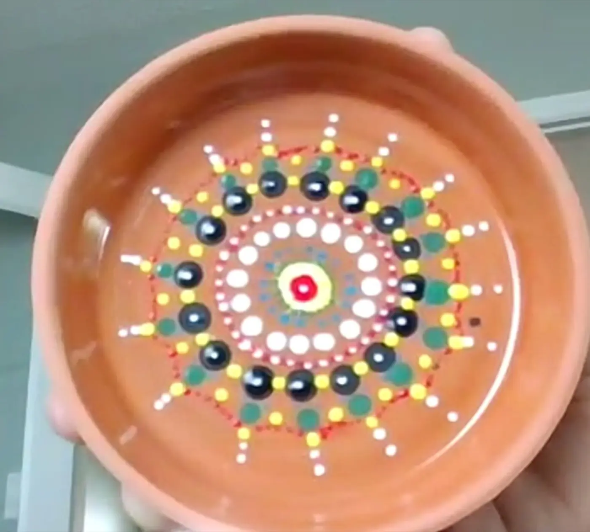
03Creativity 04Confidence
04Confidence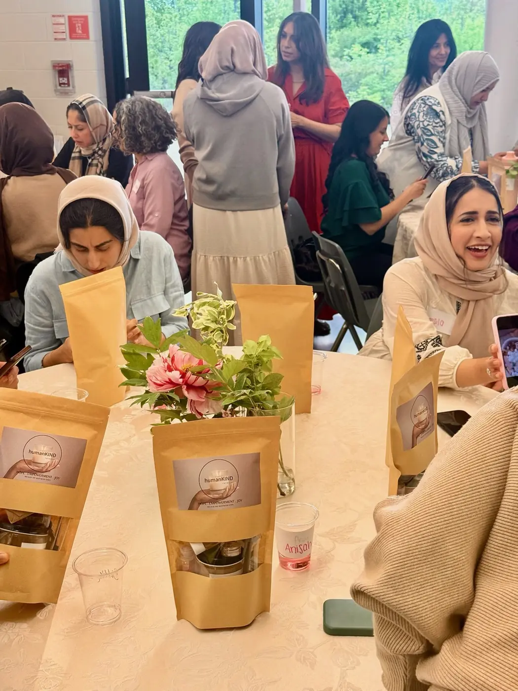
05Connection
More than anything
But more than anything, we remind them
- they are seen.
- they matter.
- they are not alone.
Our programs
Moments of healing, connection, and joy.
On-site and virtual programs for women and children, each one thoughtfully designed to foster self-expression, build confidence, and create a sense of community.
Explore Programs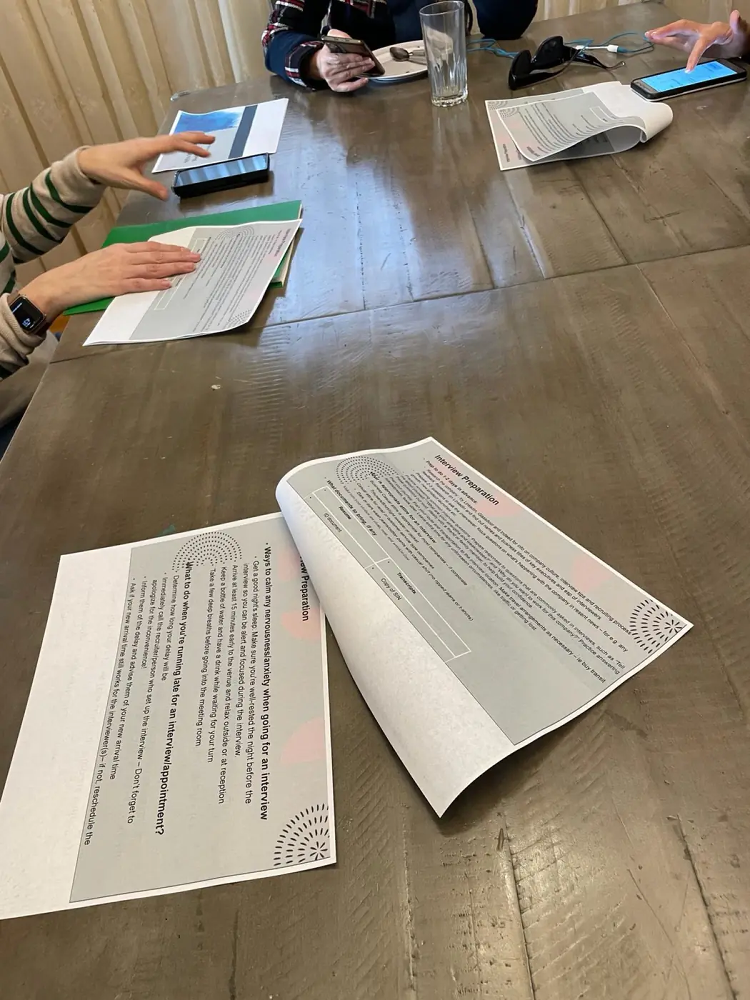
Life Skills
Practical tools that support confidence, independence, and personal growth.
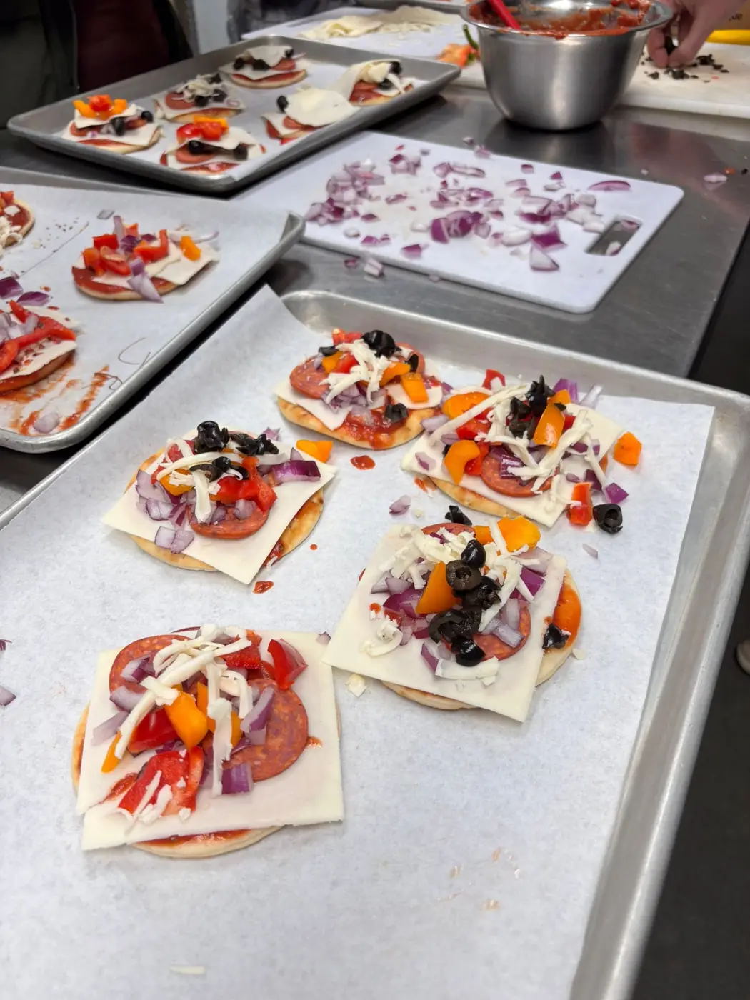
Yoga & Cooking
Relaxation, nourishment, and self-care through gentle yoga and cooking demos.
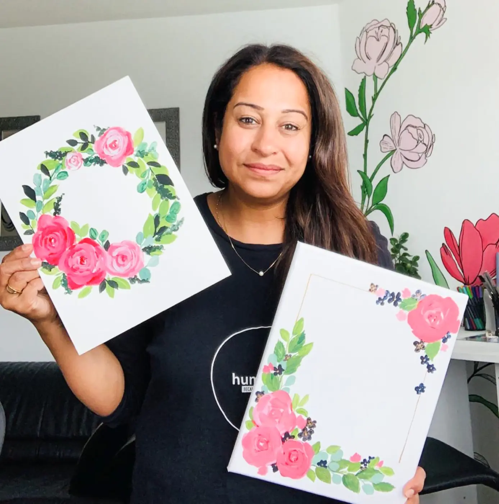
Art Sessions
A powerful outlet where the process matters more than the outcome.
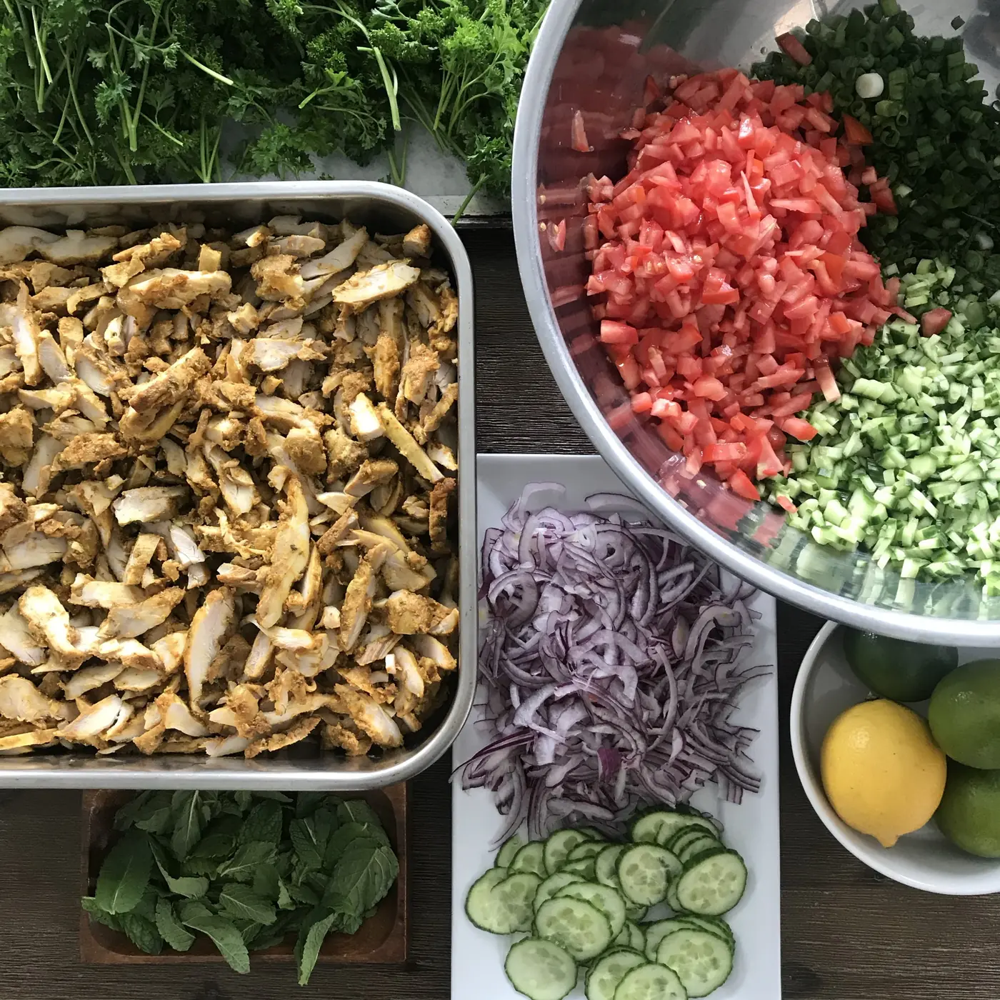
Shared Meals
Gathering around food for nourishment, conversation, and belonging.
Annual drives
Small things, delivered with care.
Throughout the year, our community comes together to collect the essentials that are needed most.
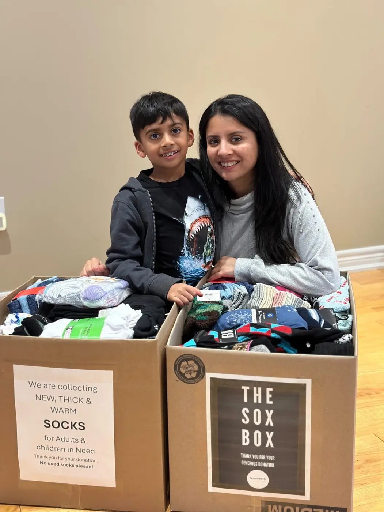
No more cold feet
One of the most requested, and most overlooked, essentials: new socks for children and adults.
Sock Drive
A meal is more than food
Thoughtfully packed lunchboxes that bring routine, stability, and comfort.
Project Lunchbox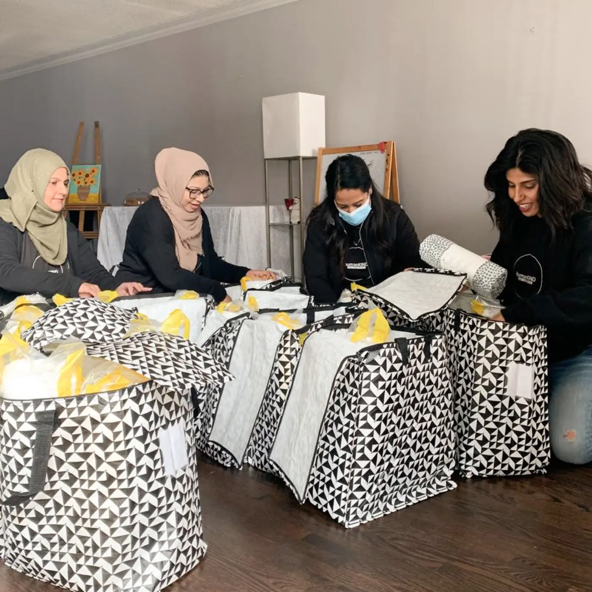
Something to call their own
Bedding and comfort items for women and children as they leave a shelter and begin again.
Gift of Hope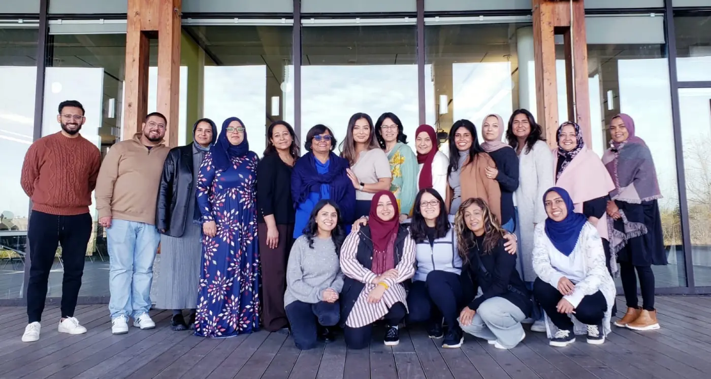
A community that shows up
Volunteers. Donors. Partners. Small businesses.
humanKIND toronto is powered by women who care deeply.
From yoga classes and art workshops to bake sales and handcrafted goods, our community continues to find beautiful, creative ways to give back.
Because kindness is contagious. Because dignity matters. Because the need never stops.
Walking alongside
Some of the shelters we support
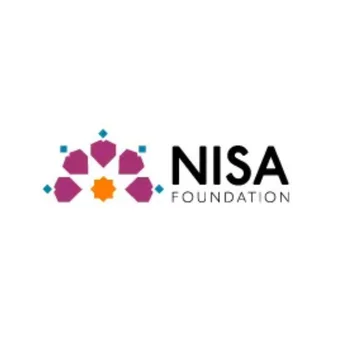
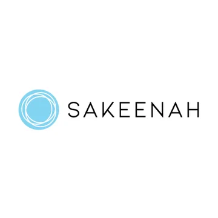
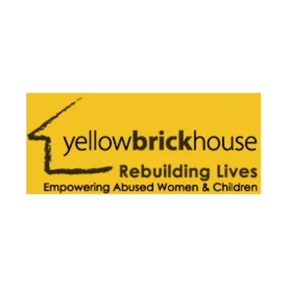
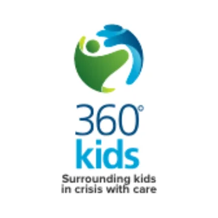
Save the date · November 20, 2026
Create for a Cause
Our annual fundraising event: a creative workshop that brings community together in support of women and children living in shelters.
Because the need never stops
Kindness is contagious.
Join a growing circle of volunteers, donors, partners and small businesses who show up, consistently and compassionately.